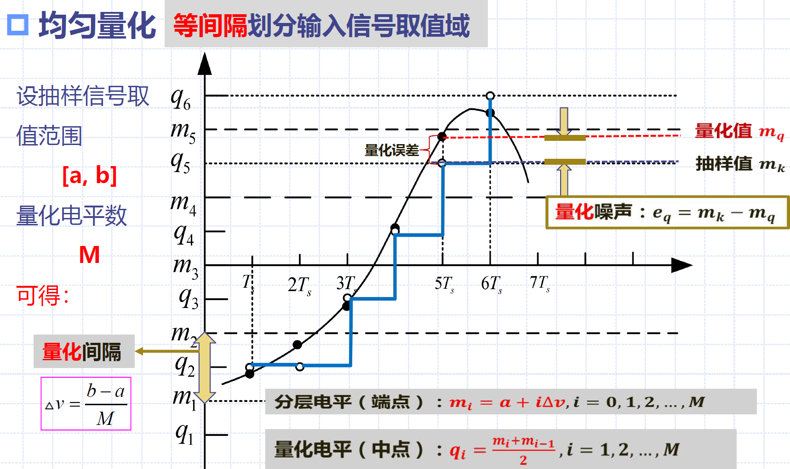
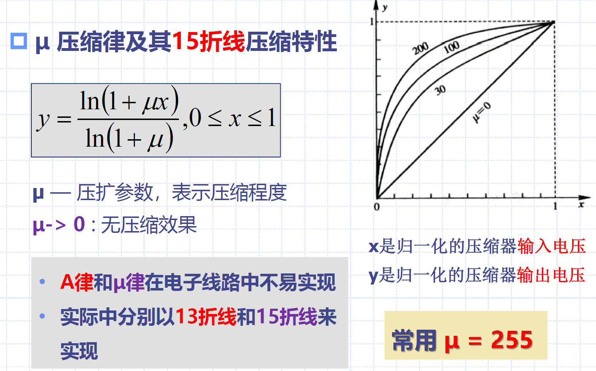

10 信源编码
10.1 概论
模拟信号：信号参量的取值是连续的或取无穷多个值的称为模拟信号
数字信号：信号参量只能取有限个值称为数字信号
信源编码：
- 作用：压缩编码、模/数转换（A/D转换）
- A/D转换技术：波形编码、参量编码
波形编码：
- 三个步骤：抽样、量化、编码
- 常用方法：脉冲编码调制PCM、差分脉冲编码调制DPCM、增量调制\(\Delta M\)
10.2 模拟信号的抽样
抽样定理：任何模拟信号数字化的理论基础
10.2.1 低通模拟信号的抽样定理
低通模拟信号的抽样定理：一个最高频率小于\(f_H\)的低通信号\(m(t)\)，可由其等间隔的抽样值唯一确定，抽样间隔\(T_s\)或抽样速率\(f_s\)应满足\(T_s\leq \frac{1}{2f_H}\)或\(f_s\geq 2f_H\)
- 如果以\(f_s=2f_H\)的速率进行均匀抽样，则由抽样序列\(m(nT_s)\)能够无失真地恢复出\(m(t)\)
- 理想抽样过程的波形和频谱：无混叠
- 混叠失真
- 重建原信号：将\(M_s(f)\)通过截止频率为\(f_H\)的理想低通滤波器，即可取出原信号
奈奎斯特间隔 & 奈奎斯特速率：
- 奈奎斯特间隔：\(T_s=\frac{1}{2f_H}\)
- 奈奎斯特速率：\(f_s=2f_H\)
10.2.1 带通模拟信号的抽样定理
带通模拟信号的抽样定理：设带通模拟信号频带在\(f_L\sim f_H\)之间，信号带宽\(B=f_H-f_L\)，则此带通信号所需最小抽样速率为\(f_s=2B(1+\frac{k}{n})\)，n为\((f_H/B)\)的整数部分，k为\((f_H/B)\)的小数部分
- \(f_L=0\)时，等同于低通抽样
- 当\(f_L\)很大时，为高频窄带信号，\(f_s\approx 2B\)
10.3 模拟脉冲调制
冲激函数时理想多样的，但是实际的抽样脉冲的宽度和高度是有限的
模拟脉冲调制分类：
- 脉冲振幅调制PAM
- 脉冲宽度调制PDM
- 脉冲位置调制PPM
模拟脉冲振幅调制PAM：PAM是脉冲序列的幅度虽则\(m(t)\)变化的一种模拟脉冲调制方式
- 事实上，抽样的结果就是一个PAM信号
- PAM是模拟信号数字化的必经之路
- 抽样信号频谱：\(M_s(f)=\frac{1}{T_s}\sum_{n=-\infty}^{\infty}M(f-nf_s)\)
- 抽样分类：
- 理想抽样：抽样脉冲序列为理想的冲击脉冲序列
- 实际抽样：抽样脉冲具有一定宽度和有限高度
- 自然抽样、平顶抽样
自然抽样：样值脉冲幅度随着原信号\(m(t)\)的幅度而变
- 产生：用基带模拟信号对脉冲载波进行调幅
- 恢复：低通滤波器
- 频谱：\(M_s(f)=M(f)*S(f)=\frac{A\tau}{T_s}Sa(\pi n \tau f_s)M(f-nf_s)\)
平顶抽样：每个脉冲值的顶部都是平坦的
- 产生：将模拟信号与非常窄的周期性脉冲相乘，然后通过一个保持电路，将抽样电压保持一段时间
- 恢复：修正+低通滤波器
- 频谱：\(M_H(f)=\frac{1}{T_s}\sum_{n=-\infty}^{\infty}H(f)M(f-nf_s)\)
10.4 抽样信号的量化
10.4.1 量化原理
量化：用有限个量化电平表示无限个抽样值
- 模拟信号抽样称为时间离散信号，但仍然是模拟的

10.4.2 均匀量化
均匀量化：等间隔划分输入信号取值域

信号量噪比：信号功率与量化噪声之比
- 模拟抽样信号取值：\([a,b]\)
- 量化间隔：\(\Delta v=\frac{b-a}{M}\)
- 量化区间端点：\(m_i=a+i\Delta v\)
- 量化输出电平：\(q_i=\frac{m_i+m_{i-1}}{2}\)
- 量化噪声功率：\(N_q=E[(m_k-m_q)^2]=\int_a^b(m_k-m_q)^2f(m_k)dm_k=\sum_{i=1}^{M}\int_{m_{i-1}}^{m_i}(m_k-q_i)^2f(m_k)dm_k\)2
- 抽样值\(m_k=m(kT_s)\)，量化信号值\(m_q=m_q(kT_s)\)，M为量化电平数，\(m_i=a+i\Delta v\)，\(q_i=a+i\Delta v-\frac{\Delta v}{2}\)
- 信号\(m_k\)平均功率：\(S=E(m_k)^2=\int_a^b x^2f(x)dx\)
- 信号量噪比：\(\frac{S}{N_q}=\frac{E(m_k)^2}{E[(m_k-m_q)^2]}\)
均匀量化器的小结论：一个均匀量化器的量化电平数为M，输入信号的抽样值在\([-a,a]\)区间具有均匀的概率密度，则该量化器的量化信噪比为\(\frac{S}{N_q}=M^2=2^{2N}\)，其中\(M=2^N\)
- \((\frac{S}{N_q})_{dB}=10\lg(2^{2N})\approx 6N (dB)\)
10.4.3 非均匀量化
非均匀量化：信号抽样值小，则量化间隔小；信号抽样值大，则量化间隔大
- 实现：将信号抽样值压缩后进行均匀量化
- 小抽样值被放大，大抽样值被压小
- 恢复：采用与压缩器特性相反的扩张器将信号进行扩张
- 优点：
- 当输入量化器的信号具有非均匀分布的概率密度时，非均匀量化器的输出端可以得到较高的平均信号量噪比
- 非均匀量化时，量化噪声功率均方根基本与信号抽样值成比例，改善了小抽样值时的量噪比
A律与\(\mu\)律：
- A压缩律——13折线近似法（中国大陆、欧洲以及国际互联时）
- \(\mu\)压缩律——15折线近似法（北美、日本、韩国等少数国家）
A压缩律：
\[
y=\begin{cases}
\frac{Ax}{1+lnA} & 0 \leq x \leq \frac{1}{A} \\
\frac{1+\ln Ax}{1+lnA} & \frac{1}{A} \leq x \leq 1 \\
\end{cases}
\]
- A：常数，决定压缩程度
- A=1，无压缩效果
- 实际常用A=87.6，使压缩特性曲线再原点附近斜率为16
- x：压缩器归一化输入电压 => \(x=\frac{压缩器输入电压}{压缩器可能的最大输入电压}\)
- y：压缩器归一化输出电压 => \(y=\frac{压缩器输出电压}{压缩器可能的最大输出电压}\)
13折线压缩特性：（A律的近似）


\(\mu\)压缩律与15折线压缩特性：


10.5 脉冲编码调制
脉冲编码调制：将模拟信号的抽样量化值变成二进制信号，是模拟信号数字化方法之一
- 过程：抽样、量化、编码
- 常用二进制码：
- 自然二进制码：编码简单，译码可以逐比特独立进行
- 折叠二进制码：简化编码过程，误码对小电压影响小
- 格雷码：相邻码字距离恒为1
- PCM编码采用非均匀量化8位折叠码
A律13折线PCM编码：正负各8段，每段16个量化级，共256个量化级
- 编码组成：
- \(C_1\)极性码：表示样值的极性，正1负0
- \(C_2C_3C_4\)段落码：表示样值幅度所在段落
- \(C_5C_6C_7C_8\)段内码：对应段内的16个量化级
- 为了确定样值的幅度所在段落和量化级，必须知道段落的起始电平和各段内的量化间隔

PCM系统中噪声的影响：量化噪声 & 加性噪声
- 加性噪声：\(\frac{S_o}{N_a}=\frac{M^2}{2^{2(N+1)}P_e}\)
- 量化噪声：\(\frac{S_o}{N_q}=M^2=2^{2N}\)
- 总输出信噪比：\(\frac{S_o}{N}=\frac{2^{2N}}{1+2^{2(N+1)}P_e}\)
- 大信噪比：\(2^{2(N+1)}P_e<<1\)，\(\frac{S_o}{N}\approx 2^{2N}\)
- 小信噪比：\(2^{2(N+1)}P_e<<1\)，\(\frac{S_o}{N}\approx \frac{1}{4P_e}\)
10.6 差分脉冲编码调制
预测编码：每个抽样值不是独立地编码，而是先根据前几个抽样值计算一个预测值，再取当前抽样值和预测值之差，将此差值编码并传输
- 线性预测：前几个抽样值的线性组合
- 差分脉冲编码调制DPCM：仅使用前面的一个抽样值预测当前抽样值
10.7 增量调制
增量调制原理：当DPCM中量化器的量化电平数取2时，即为增量调制系统
- 量化噪声：译码器恢复的信号与编码输入模拟信号的波形之间存在失真
- 一般量化噪声：编码和译码时使用阶梯波形近似，因此这是增量调制的基本量化噪声，且伴随信号永远存在
- 过载量化噪声：发生在输入信号斜率绝对值过大的情况下
- 阶梯波的最大可能斜率（译码器最大跟踪斜率）：\(k=\frac{\sigma}{T_s}=\sigma f_s\)
- \(\sigma\)为量化台阶，\(f_s\)为抽样频率
- 若增大量化台阶，则会增大基本量化噪声，所以需要增大抽样频率避免过载量化噪声
- 最大信号量噪比：\(\frac{S_{max}}{N_q}=\frac{3}{8\pi^2}(\frac{f_s^3}{f_k^2f_m})\approx0.04\frac{f_s^3}{f_k^2f_m}\)
10.8 时分复用
时分复用TDM：利用抽样的间隔时间传输多路抽样信号
- 优点：便于实现数字通信、易于制造、适用采用集成电路实现、生产成本低
- TDM & FDM：
- TDM：各路信号在时域分开，频域混叠
- FDM：各路信号在频域分开，时域混叠
- 时分制多路电话通信系统，ITU制定了两种准同步数字体系 => E体系、T体系
10.9 矢量量化
详见教材P312
10.12 数字数据压缩编码
无损压缩、熵编码、等长码、变长码
信源编码、唯一可译码、非奇异性
- 唯一可译码的两种方式：即时可译码、非即时可译码
Kraft不等式：对于D元字母表上的即时可译码，码字长度\(l_1,l_2,...,l_m\)必定满足不等式\(\sum_{i=1}^{m}D^{-l_i}\leq 1\)
- 任意唯一可译码的码字长度也必然满足Kraft不等式
最优码：码字的最小期望长度为\(L^*=\sum p_il_i=-\sum p_i\log_D p_i=H_D(X)\)
- 最优码的码长满足以下界定定理：\(H_D(X)\leq L\leq H_D(X)+1\) => 香农第一定理（无失真信源编码）
霍夫曼编码：无前缀变长码，即时可译码，对给定熵的信源能够达到最小平均码长，是最优码
- 过程：信源缩减 -> 分配码字
压缩编码性能指标：
- 压缩比：压缩前每个字符的平均码长与压缩后每个字符的平均码长之比
- 编码效率：编码后的字符平均信息量（熵）与编码平均码长之比
扩展码：